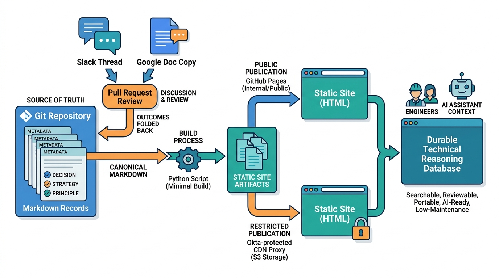

Recoding Decisions
Markdown Records as the Default Format for Technical Decisions, Strategies, and Discussions

Image generated by Google Gemini (gemini-3-pro-image-preview)
Recoding Decisions

Image generated by Google Gemini (gemini-3-pro-image-preview)